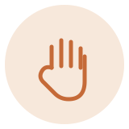
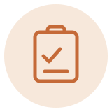

こんなお気持ち、ありませんか
- 「キーンという音を聞くだけで、体がこわばる」
- 「麻酔の注射が痛そうで、足がすくむ」
- 「久しぶりすぎて、また怒られそう」
- 「口の中を見られるのが、恥ずかしい」
どれも、よくいただくお声です。同じように感じている方は、少なくありません。そのままの気持ちで来ていただいて構いません。（仮）
当院の4つの約束
01

痛かったら、すぐ止めます。
表面麻酔をしてから、できるだけ細い針で麻酔します。それでも痛みを感じたら、我慢せず左手を挙げてください。すぐに手を止めます。（仮）
02
初回は、お話をうかがうことから。
初めての日は、無理に治療はしません。今困っていること、過去にいやだった経験、苦手なこと。話せる範囲で聞かせてください。その日はお話だけで帰っていただいてかまいません。（仮）
03

黙って進めることは、しません。
これから何をするのか、なぜ必要なのかを、先にお伝えします。難しい言葉はできるだけ使いません。納得していただいてから始めます。（仮）
04

途中でも、止められます。
治療中につらくなったら、いつでも手を止めます。無理に続けることはしません。あなたのペースに合わせて進めます。（仮）
来院の流れ
あわてて治療を始めることはありません。だいたい、こんな流れで進みます。（仮）
-
STEP 1
予約のときに「怖い」と伝えてください
ひとことそう言っていただければ大丈夫です。あとはこちらで準備しておきます。（仮）
-
STEP 2
まずはお話をうかがいます
気になっていること、これまでにいやだった経験。話せる範囲で聞かせてください。そのうえで、これからどうしていくかを一緒に考えます。（仮）
-
STEP 3
お口の状態を確認します
そのときの様子に合わせて、無理のない範囲で確認します。今どうなっているかを、一緒に見ていきましょう。（仮）
-
STEP 4
お話だけの通院でも、かまいません
「今日は話すだけ」でも、立派な通院です。心の準備ができてからで大丈夫です。（仮）
不安を解消するQ&A
- 久しぶりすぎて、気まずいのですが…
- 何年ぶりでも歓迎します。来ていただけたことが、何よりです。今の状態を見て、ここからどうするかを一緒に考えましょう。（仮）
- 痛みに弱いのですが…
- 遠慮なく伝えてください。麻酔のしかたや進め方を、その方に合わせて調整します。つらいときは、いつでも止められます。（仮）
- 初日に治療されますか？
- 初日は、検査とご説明が中心です。痛みが強いときだけ、その日に応急処置をすることがあります。（仮）
- 相談だけでも行っていいですか？
- もちろんです。相談だけで帰っていただいてかまいません。来てくださった時点で、もう一歩進んでいます。（仮）
治療するかどうかは、来てから一緒に決めれば大丈夫です。
まずは、お話をするだけでも構いません。保険診療を基本に対応します。（仮）